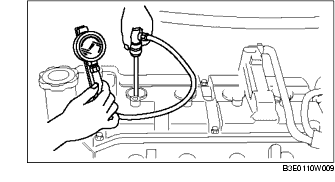

KOMPRESSION PRÜFEN [ZJ, Z6]
B3E011001001W01
-
Vorsicht
-
• Bei heißem Motor besteht Verbrennungsgefahr. Deshalb beim Ausbau/Einbau der Bauteile vorsichtig vorgehen.
-
• Kraftstoffdämpfe sind gefährlich. Sie können sich sehr leicht entzünden und schwere Verletzungen und Schäden verursachen. Funken und offenes Feuer daher stets fernhalten.
-
• Austretender Kraftstoff und Leckstellen in den Kraftstoffleitungen sind gefährlich. Kraftstoff kann sich entzünden und schwere oder tödliche Verletzungen und Schäden verursachen. Außerdem kann Kraftstoff auch Haut- und Augenreizungen hervorrufen. Um dies bei Wartungsarbeiten am Kraftstoffsystem zu verhindern, stets die "Vorsichtshinweise für Arbeiten an der Kraftstoffanlage" beachten, und das Kraftstoffpumpenrelais entfernen. (Siehe VORSICHTSHINWEISE VOR AUSFÜHRUNG DER WARTUNGSARBEITEN [ZJ, Z6, LF].)
1. Sicherstellen, dass die Batterie voll geladen ist. (Siehe BATTERIE PRÜFEN.)
2. Den Motor auf normale Betriebstemperatur bringen.
3. Den Motor abstellen und die Auspuffanlage ca. 10 Minuten abkühlen lassen.
4. Das Kraftstoffpumpenrelais ausbauen. (Siehe VORSICHTSHINWEISE VOR AUSFÜHRUNG DER WARTUNGSARBEITEN [ZJ, Z6, LF].)
5. Den Luftfilter ausbauen. (Europa-Ausführung (LHD)) (Siehe LUFTANSAUGSYSTEM AUSBAUEN/EINBAUEN [ZJ, Z6].)
6. Das Luftfiltergehäuse entfernen und den Luftfilterdeckel zur Seite aus dem Weg räumen mit angeschlossenem PCM-Steckverbinder. (GB-Ausführung) (Siehe LUFTANSAUGSYSTEM AUSBAUEN/EINBAUEN [ZJ, Z6].)
7. Die Zündspule ausbauen. (Siehe ZÜNDSPULE AUSBAUEN/EINBAUEN [ZJ, Z6].)
8. Alle Zündkerzen ausbauen. (Siehe ZÜNDKERZEN AUSBAUEN/EINBAUEN [ZJ, Z6].)
9. Den Kompressionsdruck anhand der nachfolgenden beschriebenen Weise messen.
-
(1) Den Kompressionsdruckprüfer an die Bohrung der Zündkerze anschließen.

-
(2) Die Drosselklappe vollständig öffnen.
-
(3) Den Motor durchdrehen und den Kompressionsdruck messen.
-
Kompressionsdruck
-
ZJ
-
• Standard
-
1.461 kPa {14,90 kg/cm2, 211,9 psi} [300 U/min]
-
• Minimum
-
1.023 kPa {10,44 kg/cm2, 148,4 psi} [300 U/min]
-
• Maximaler Unterschied zwischen den Zylindern
-
196,1 kPa {2,0 kg/cm2, 28,5 psi}
-
Z6
-
• Standard
-
1.470 kPa {14,99 kg/cm2, 213,2 psi} [250 rpm]
-
• Minimum
-
1.029 kPa {10,49 kg/cm2, 149,2 psi} [250 rpm]
-
• Maximaler Unterschied zwischen den Zylindern
-
196,1 kPa {2,0 kg/cm2, 28,5 psi}
-
(4) Die Schritte (1) bis (3) für alle Zylinder durchführen.
-
(5) Falls diese unter den Vorgaben liegen, oder es gibt einen Zylinder, der einen Kompressionswert aufweist, der von anderen Zylindern um 196,1 kPa {2,0 kg/cm2, 28,5 psi} oder mehr abweicht, die Schritte (1) bis (3) durchführen, dabei ein wenig Motoröl von der Bohrung der Zündkerze anbringen.
-
• Wenn der Druck durch Anbringen von Motoröl ansteigt, ist der Kolbenring oder die Oberfläche des Zylinderkopfes verschlissen oder sind diese beschädigt. Wartungsüberholung durchführen.
-
• Falls die Druck nicht ansteigt, kann ein Ventil festgefressen bzw. ein Ventildruckstück defekt sein, oder kann Druck über die Zylinderkopfdichtung entweichen. Wartungsüberholung durchführen.
10. Die Zündkerzen einbauen. (Siehe ZÜNDKERZEN AUSBAUEN/EINBAUEN [ZJ, Z6].)
11. Die Zündspule einbauen. (Siehe ZÜNDSPULE AUSBAUEN/EINBAUEN [ZJ, Z6].)
12. Den Luftfilter montieren. (Siehe LUFTANSAUGSYSTEM AUSBAUEN/EINBAUEN [ZJ, Z6].)
13. Das Kraftstoffpumpenrelais einbauen. (Siehe VORSICHTSHINWEISE VOR AUSFÜHRUNG DER WARTUNGSARBEITEN [ZJ, Z6, LF].)